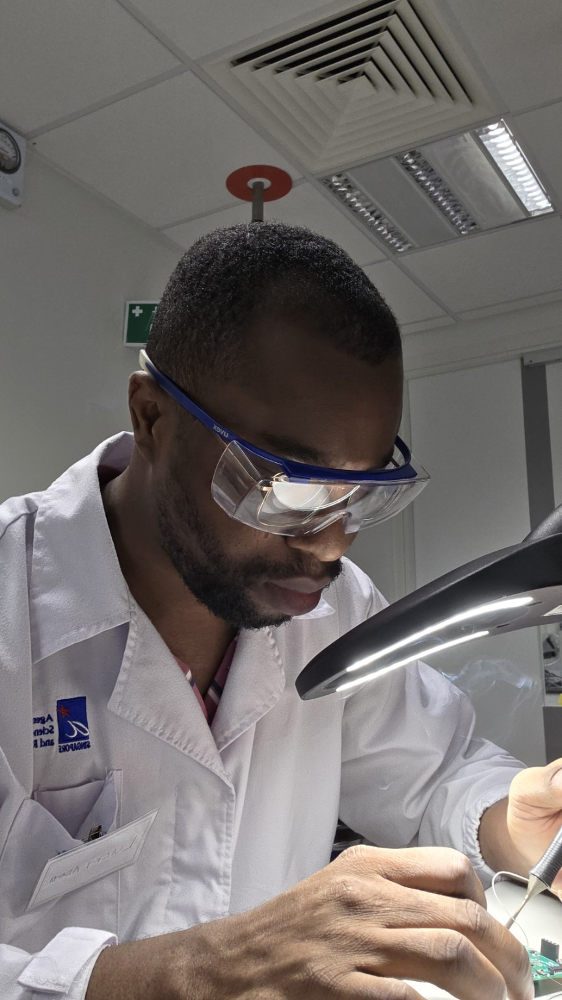
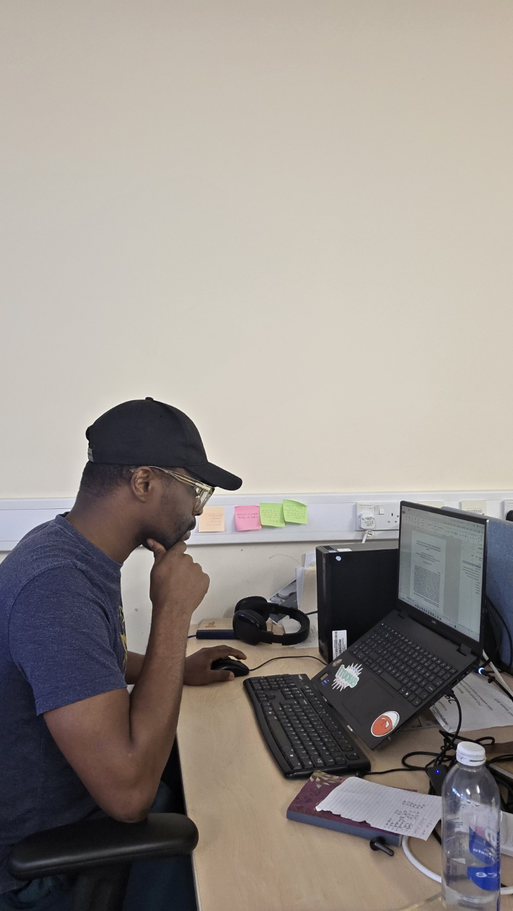
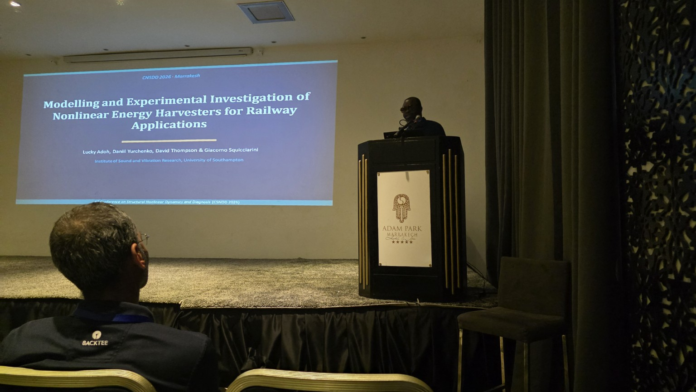
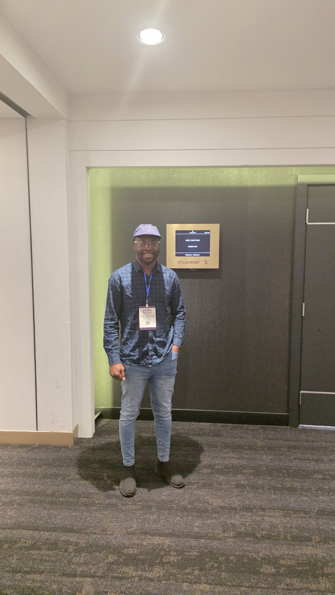
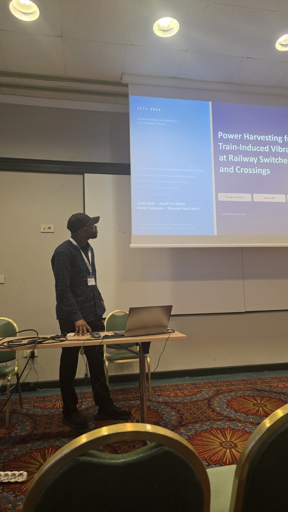
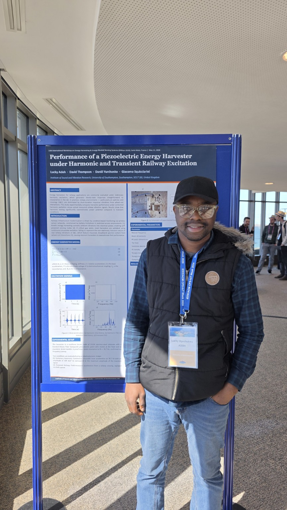

Research attachment in Singapore
Laboratory research during my attachment at the Institute of Materials Research and Engineering, A*STAR, Singapore, working on piezoelectric energy harvesting and sensing technologies.
A collection of research experiences, conference visits, travel, engineering notes, and photographs from my academic and professional journey.

Laboratory research during my attachment at the Institute of Materials Research and Engineering, A*STAR, Singapore, working on piezoelectric energy harvesting and sensing technologies.

A snapshot from my PhD journey at the University of Southampton, combining modelling, experimental work, data analysis, and research writing.

Presenting my work on modelling and experimental investigation of nonlinear energy harvesters for railway applications in Marrakech, Morocco.

Attending and presenting research in Montreal, Canada, as part of my international conference activities during my PhD.

Presenting research on power harvesting from train-induced vibrations at railway switches and crossings at the International Conference on Transport Science in Portorož, Slovenia.

Presenting research on piezoelectric energy harvesting under harmonic and transient railway excitation at ENSsys in Saint-Malo, France.
My academic, professional, and personal journeys have taken me across Africa, Europe, Asia, the Middle East, and North America.
I plan to expand this page with travel photographs, conference reflections, research experiences, engineering notes, and selected stories from the places I have visited.